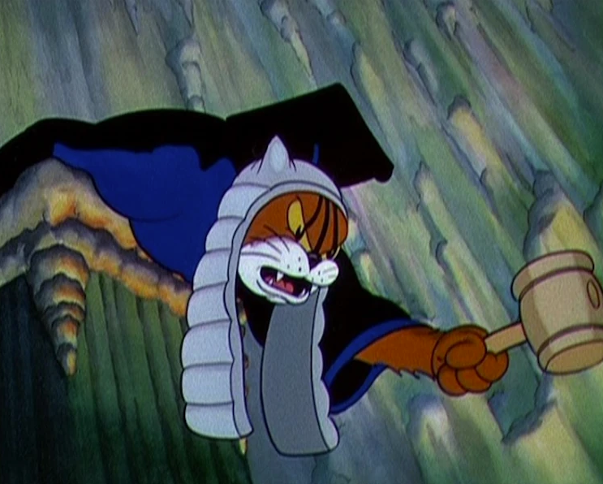

Gato Julgador

Ficha Técnica:
Nome: Gato Julgador
Nomes alternativos: O Juiz
Raça: Gato
Tipo da raça: Antropomórfico
Nivel de ameaça: Indeterminado
Características físicas:
- Peruca branca semelhante a nobres e magistrados do século XVIII
- Toga preta ou azul
- Sempre se posiciona sentado, como um humano
- Se mantem com olhar de julgamento constante
- Consegue se comunicar como humanos
Capacidades:
- Impossibilidade de mentir em sua presença
- Caso tente mentir, receberá uma punição (quanto maior a mentira, maior a punição)
- Capaz de criar sentenças auto-executáveis
- Capaz de invocar um pequeno tribunal
- Em seu tribunal, recebe autoridade para criar uma constituição temporária com quaisquer regras que mantenham o julgamento seguro
- Receberá 1/3 da punição do acusado a cada vez que tentar quebrar as regras
Fraquezas:
- Completamente inofensivo fisicamente
- Caso seja honesto e não tenha cometido crimes, ele não pode fazer nada contra você
- É possível advogar contra ele para diminuição de punições
Como contê-lo:
O Gato Julgador não representa perigo físico, porém as consequências sociais de sua presença são devastadoras. Reuniões inteiras foram destruídas quando segredos profissionais e pessoais foram revelados involuntariamente. O mantenha longe de mesas e, se necessário, ofereça papeladas de tribunais a ele.
Relato do Agente Paulo:
Agente Paulo foi o responsável por um teste de capacidade do Gato Juiz.
"Ele foi temporariamente utilizado em interrogatórios, mas o programa foi cancelado após um diretor confessar coisas que ninguém queria ouvir. Também tentamos o utilizar em tribuinais reais, mas a situação saiu do controle após descobrirmos que todos estavam comprados para punir o réu. Após as 4 mortes naquele dia, decidimos evitar que ele chegasse perto de qualquer tribuinal."
- Agente Paulo
História:
A história do Gato Juiz ainda está sendo documentada.